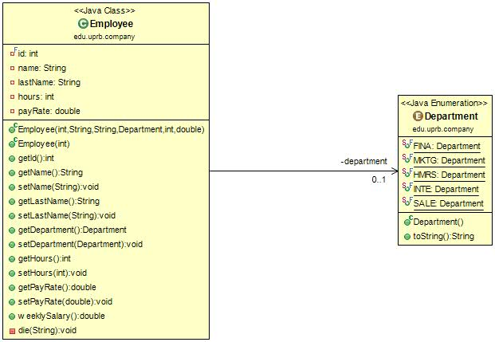
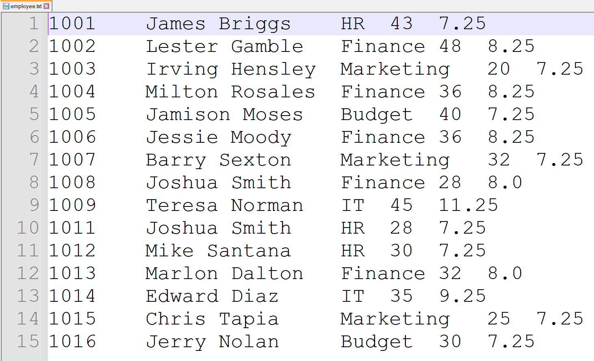
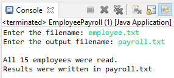
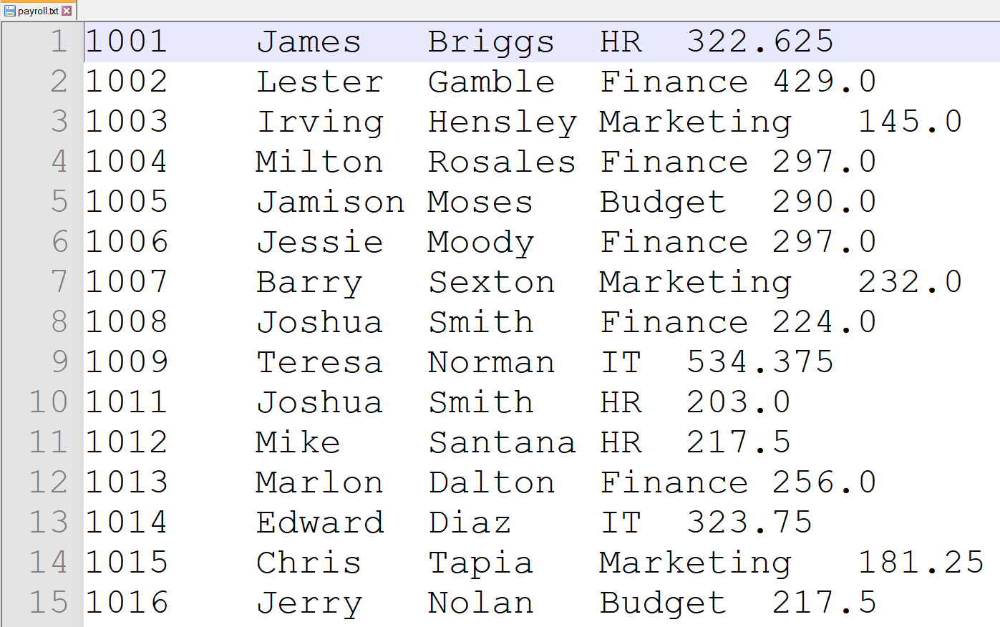

Introduction
Java is a high-level and object-oriented programming language widely used in academia and industry. This project applies Java concepts such as classes, enumerations, encapsulation and file handling to simulate a company's payroll system.
Abstract
This project demonstrates the implementation of an employee payroll system using Java. It employs enumerations, object-oriented principles, file input/output operations and validation techniques. Employee data is read from a text file, weekly salaries are computed and a formatted payroll output file is generated.
Methodology
Imagine a mid-sized company that needs to manage employee payroll efficiently. The HR department receives weekly work reports from all employees and must calculate salaries accurately.
Department Enumeration
An enumeration named Department defines constant values representing company departments:
- SALE - Budget
- MKTG - Marketing
- HMRS - Human Resources
- FINA - Finance
- INTE - Information Technology
Employee Class
The Employee class encapsulates employee attributes: ID, name, last name, department, hours worked and pay rate. Constructors and setters include validation rules, throwing IllegalArgumentException for invalid inputs.
File Processing
The EmployeePayroll application reads employee data from an external file and generates a payroll output file with computed weekly salaries. The input file employee.txt can be accessed here.
Results
The application successfully validates employee data, calculates weekly salaries and produces a formatted output file. UML diagrams illustrate class structure and relationships.
{kind=link}

Figure 1. Employee Class Diagram

Figure 2. Employee.txt with sample data

Figure 3. Output of EmployeePayroll program

Figure 4. Payroll.txt with computed salaries
Project Documentation
The complete project documentation is available in the README file. It includes project description, structure, execution instructions and additional implementation details.
Conclusion
This project demonstrates how Java supports modular and maintainable design through classes and enumerations. File I/O handling enables efficient processing of large datasets. Proper validation, structured coding and documentation are essential for reliable software development.
References
- Oracle. Java Documentation. https://docs.oracle.com/en/java/
- ObjectAid UML Explorer for Eclipse. https://www.objectaid.com/